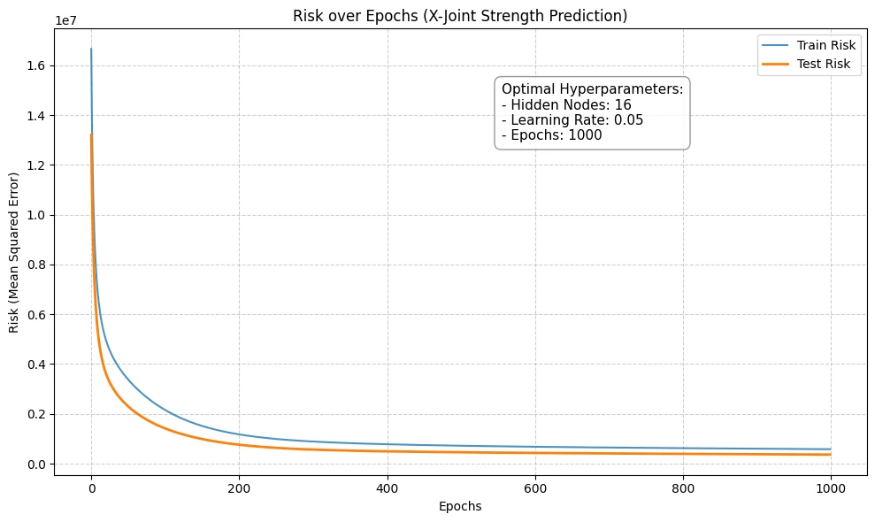

LEARNING CURVES & HYPERPARAMETERS
학습 조건을 바꾸며 읽는 AI
은닉 노드 수, 학습률, 반복 횟수를 바꾸며 훈련·테스트 오차의 변화를 비교했습니다. 코드를 실행하는 데서 나아가 학습이 진행되는 모습을 그래프로 읽었습니다.
- YEAR / SEMESTER
- 4학년 1학기
- COURSE
- 스마트건축시스템
- CONTRIBUTION
- 학습 조건 비교·분석
- SITE / SUBJECT
- X-joint 강도 예측 학습 곡선

THE IDEA
생각의 출발점
같은 예측 과제에서 설정값을 바꾸었을 때 학습 곡선이 어떻게 달라지는지 네 가지 실행 결과를 비교했습니다. 훈련 오차만 낮추는 것보다 테스트 오차의 흐름을 함께 살피는 데 초점을 두었습니다.
- 01
Epochs — 더 오래 학습하면
은닉 노드 16개·학습률 0.01을 유지하고 반복 횟수를 1,000에서 2,000으로 늘린 그래프를 비교했습니다. 추가 학습에 따른 오차 감소와 점차 완만해지는 변화에 주목했습니다.
- 02
Learning rate — 얼마나 빠르게 갱신할까
노드 16개·1,000회를 유지한 상태에서 학습률 0.01과 0.05를 비교했습니다. 제공된 실행 결과에서는 0.05 조건의 초반 오차 감소가 더 빨랐습니다.
- 03
Hidden nodes — 모델의 크기를 바꾸다
학습률 0.05·1,000회에서 은닉 노드를 16개와 32개로 바꾸었습니다. 곡선의 시작값과 축 범위를 함께 확인하며 모델 크기만으로 우열을 단정하지 않는 해석을 연습했습니다.
READING THE RESULTS
네 가지 학습 조건
| 조건 | Hidden nodes | Learning rate | Epochs |
|---|---|---|---|
| A | 16 | 0.01 | 1,000 |
| B | 16 | 0.01 | 2,000 |
| C | 16 | 0.05 | 1,000 |
| D | 32 | 0.05 | 1,000 |
A–B: 반복 횟수 / A–C: 학습률 / C–D: 은닉 노드 수 비교. 파란 선은 훈련 오차, 주황 선은 테스트 오차입니다.
PROCESS & OUTCOME
과정과 결과
사진을 누르면 크게 볼 수 있습니다.